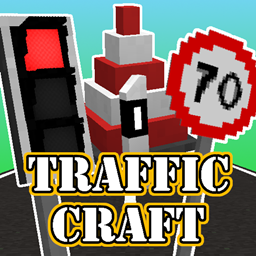

<!-- === 【ここから】1つのMod紹介ブロック（増やすときはこれを丸ごとコピー） === -->
<div class="mod-card">

    <!-- 左側：Modのスクリーンショット（例：images/フォルダに保存した画像） -->
    <div class="mod-image-area">
        
    </div>

    <!-- 右側：Modの詳しい解説文 -->
    <div class="mod-info-area">
        <h2 class="trafficcraft"></h2>
        
        <!-- タグ（Modのジャンルや対応バージョンなどをお好みで！） -->
        <div class="mod-tags">
            <span class="1.21.1、1.20.4、1.20.1、1.19.2-1.19.4、1.18.2"></span>
            <span class="車用の信号機、アスファルトなど、さまざまな車周辺の装飾ブロックを追加します"></span>
        </div>

        <p class="mod-description">
            このmodに追加されるブロックは、アスファルト、コンクリート、
            および雪の層のように作用するこれらの材料の斜面や数百種類の中から選ぶか、
            オリジナルの標識を作成できます。
        </p>

        <!-- ボタン（個別詳細ページや、配布サイトへのリンクなど） -->
        <a href="#" class="https://modrinth.com/mod/trafficcraft"></a>
    </div>

</div>